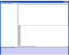
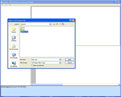
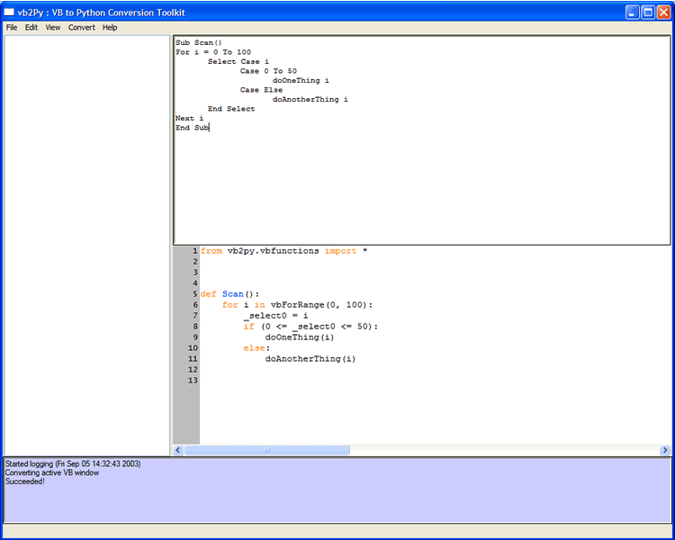
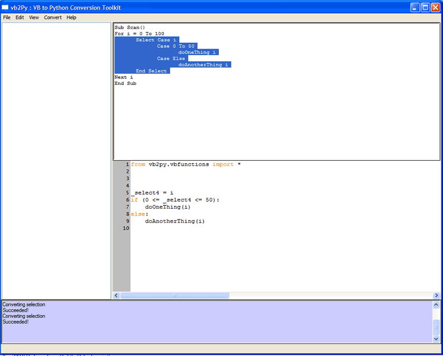
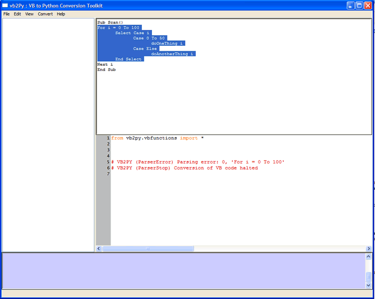
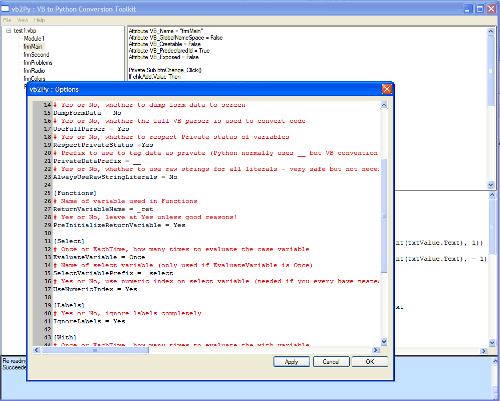
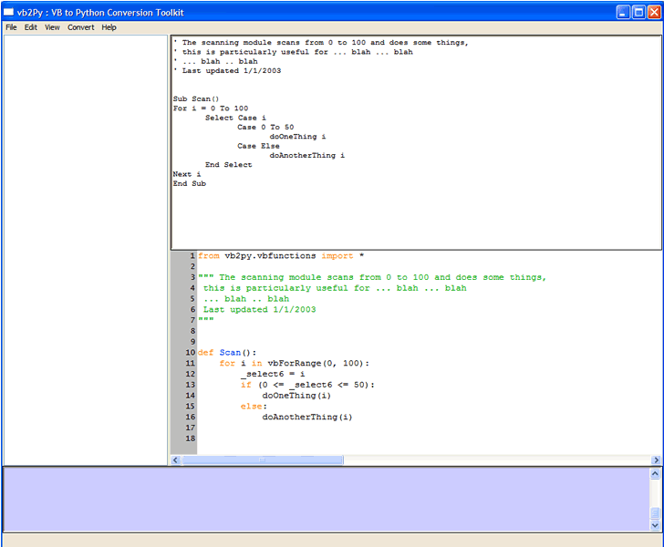
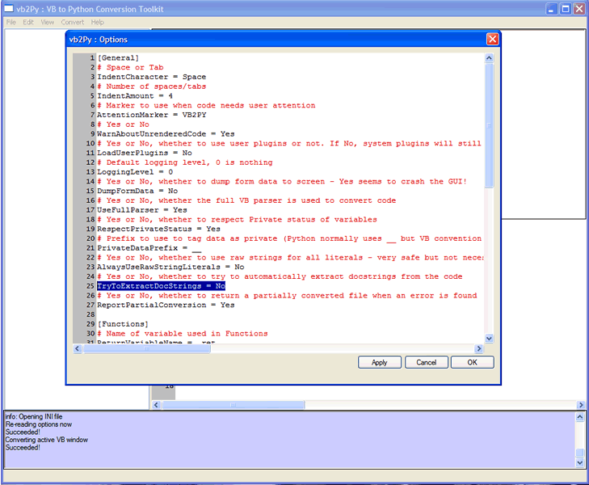
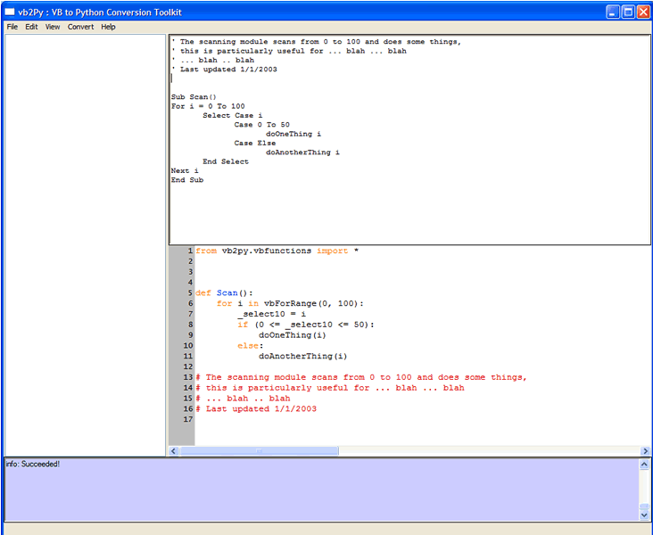

Converting Entire Projects
If you installed the GUI package and if you have PythonCard installed then you will be able to use the vb2Py GUI to monitor the conversion procedure. To start the gui, either double click on the vb2pygui.pyw file in your vb2pygui folder of change directory to that folder in a shell and type:
> python vb2pygui.pyw
The GUI should start and show the form below.

See the full startup screen
{kind=link}
From the startup screen you would normally click on the File ... Open menu item (or press CTRL-O). This brings up the open dialog.

See the full open dialog
{kind=link}
Using the file selection box you can select the Visual Basic project file (*.vbp) that you want to convert. Note that in version 0.2, you are not able to convert individual files using the GUI. To convert individual files where you do not have a VBP file you need to use the command line version.
Having selected a file the application will then try to load all the files and modules associated with the project and parse the Visual Basic code and form definitions. You will see the progress in the log window (at the bottom of the screen). When this is complete the tree view (on the left of the screen) will indicate all the files in the project. Clicking on a file in the tree brings up the original VB code and the converted Python version in the two code windows on the right. The Python version is on the bottom.
See the full code view
{kind=link}
To write out the converted files you select the File ... Save menu item. This brings up a menu selection dialog and asks you to point to a directory. This is where the converted files will be placed. Once you press OK the files will be written and you can then run them in the same way as any other Python programs.
Converting Code Fragments
You can convert code fragments that you write by hand or copy from the clipboard using the VB code window (top right) and the Convert ... Convert Active (CTRL-A) menu item.
For example, type the following VB code into the top right window:
Sub Scan()
For i = 0 To 100
Select Case i
Case 0 To 50
doOneThing i
Case Else
doAnotherThing i
End Select
Next i
End Sub
and then hit CTRL-A. The code gets converted as below,

On the Convert menu, you may have noticed that there were three options,
- Code module
- Class module
- Form module
These options determine the context of the conversion, ie. they tell vb2Py where the code you are typing comes from. This is important because some of the conversion depends on whether the code comes from a code, class or form module. For instance, in a cod module all the subroutines are just converted to functions. If the code comes from a class or form module then everything is encapsulated in a class.
To see this select Convert ... Class module from the menu and then hit CTRL-A again. You should get the following view,

If you have a large amount of text (for example if you pasted some in from another text editor) then you can just convert a small section of it by using the Convert ... Convert selection (CTRL-SHIFT-S) menu option. Select just the Select clause in the above code and then hit CTRL-SHIFT-S to get the following view,

Note, that you must be very carefull when choosing this option that you select the enitre block that you are interested in. If you don't select the entire block then vb2Py will not be able to parse the VB code as shown in the following example,

Also notice that when you have an incomplete block the parsing will stop at the begining of the incomplete block.
Changing options
The vb2Py conversion process is controlled by an options file (vb2py.ini) in the main vb2py folder. You can quickly see the result of chaning various options by using the View ... Options menu item. Selecting this item brings up the Options window.

You can edit any of the options as you would in a text editor and then press OK to return to the converter. To see the result of your option change, click on a file in the tree view list or press CTRL-A to convert the current code in the VB window (refer to the Converting Code Fragments section for more details).
If you are changing many options then you may want to use the Apply button from the Options window. This applies the configuration changes without closing the options window. You can click on the main window again to see your changes (you need to select a file from the tree or press CTRL-A) and switch between the Options and Main windows to see how different options change the code.
As an example, here is the screen after a default conversion of some text (in the context of a Code module),

Note that the VB comments at the start of the text were converted to a Python docstring since the TryToConvertDocstrings option in vb2Py defaults to Yes. If we now change the option,

and hit OK and then CTRL-A again, we see that the comments are not converted to a docstring and remain as individual comments.
